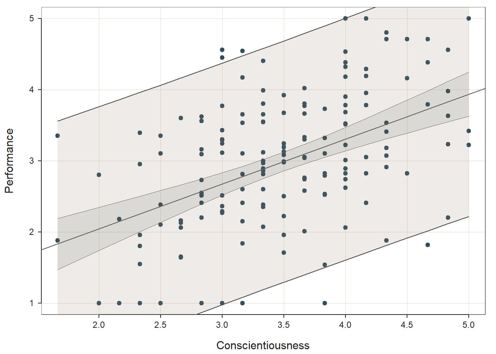

Chapter 38 Predicting Criterion Scores Based on Selection Tool Scores Using Simple Linear Regression
In this chapter, we will learn how to estimate a simple linear regression model and apply the models equation to predict future scores on the criterion variable. Well begin with conceptual overviews of simple linear regression and predicting criterion scores, and well conclude with a tutorial.
38.1 Conceptual Overview
Like correlation, regression can provide us with information about the strength and sign of the relationship between a predictor variable and an outcome variable. Regression expands upon basic correlation by providing additional information about the nature of a linear relation, such that we can predict changes in a criterion (i.e., outcome) variable based on changes in a predictor variable. More specifically, regression provides us with the basic equation for predicting scores on the outcome variable based on one or more predictor variable scores. Regression equations include information about the Y-intercept and the estimated regression coefficients (i.e., weights, slopes) associated with each predictor in the model. There are many different types of regression models, and in this chapter, were going to review simple linear regression and how we can apply the associated equation to predict scores on the criterion.
38.1.1 Review of Simple Linear Regression
Link to conceptual video: https://youtu.be/0ChqmiOK5Q4
A simple linear regression model has one predictor (i.e., independent) variable and one outcome (i.e., dependent) variable. In this tutorial, we will learn how to estimate an ordinary least squares (OLS) simple linear regression model, where OLS refers to the process of estimating the unknown components (i.e., parameters) of the regression model by attempting to minimize the sum of squared residuals. The sum of the squared residuals are the result of a process in which the differences between the observed outcome variable values and the predicted outcome variable values are calculated, squared, and then summed in order to identify a model with the least amount of error (residuals). This is the where the line of best fit comes into play, as the line of best fit represents the regression model (equation) in which the error (residuals) between the predicted and observed outcome variable values are minimized. In other words, the goal is to find the linear model that best fits the data at hand.
The equation for a simple linear regression with unstandardized regression coefficients (\(b\)) is as follows:
\(\hat{Y} = b_{0} + b_{1}X + e\)
where \(\hat{Y}\) represents the predicted score on the outcome variable (\(Y\)), \(b_{0}\) represents the \(\hat{Y}\)-intercept value (i.e., model constant) when the predictor variable \(X\) is equal to zero, \(b_{1}\) represents the unstandardized coefficient (i.e., weight, slope) of the association between the predictor variable \(X\) and the outcome variable \(\hat{Y}\), and \(e\) represents the (residual) error in prediction. Importantly, the unstandardized regression coefficient \(b_{1}\) represents the raw slope (i.e., weight, coefficient) or rather, how many unstandardized units of \(\hat{Y}\) increase or decrease as a result of a single unit increase in \(X\). That is, unstandardized regression coefficients reflect the nature of the association between two variables when the variables retain their original scaling. Often this is why we choose to use the unstandardized regression coefficients when making predictions about \(\hat{Y}\), as the predicted scores will be have the same scaling as the outcome variable in its original form.
As shown below, we can conceptualize the our simple linear regression model as depicting a line of best fit, wherein the estimate linear equation attempts to minimize the errors in prediction in \(\hat{Y}\) based on observed scores of \(X\).
We can map our regression equation estimates and concepts onto the line of best fit as shown below.
We can also obtain standardized regression coefficients. To do so, the predictor variable (\(X\)) and outcome variable (\(Y\)) scores must be standardized. To standardize variables, we convert the predictor and outcome variables to z-scores, such that their respective means are standardized to 0 and their variances and standard deviations are standardized to 1. When standardized, our simple linear regression model equation will have a \(\hat{Y}\)-intercept value equal to zero (and thus is not typically reported) and the standardized regression coefficient is commonly signified using the Greek letter \(\beta\):
\(\hat{Y} = \beta_{1}X + e\)
where \(\hat{Y}\) represents the predicted standardized score on the outcome variable (\(Y\)), \(\beta_{1}\) represents the standardized coefficient (i.e., weight, slope) of the association between the predictor variable \(X\) and the outcome variable \(\hat{Y}\), and \(e\) represents the (residual) error in prediction. When we have obtain standardized regression coefficients in a simple linear regression model, the \(\beta_{1}\) value will be equal to the correlation (r) between \(X\) and \(\hat{Y}\). A standardized regression coefficient (\(\beta\)) also allows us to also compare the relative magnitude of one \(\beta\) to another \(\beta\); with that being said, in the case of a multiple linear regression model (in which there are 2+ more predictor variables), comparing \(\beta\) coefficients is only appropriate when the predictor variables in the model share little to no intercorrelation (i.e., have low collinearity). Given that, I recommend that you proceed with caution should you choose to make such comparisons.
In terms of interpretation, in a simple linear regression model, the standardized regression coefficient (\(\beta_{1}\)) indicates the standardized slope or, rather, how many standard units of \(\hat{Y}\) increase or decrease as a result of a single standard unit increase in \(X\).
38.1.1.1 Statistical Assumptions
The statistical assumptions that should be met prior to running and/or interpreting estimates from a simple linear regression model include:
- Cases are randomly sampled from the population, such that the variable scores for one individual are independent of the variable scores of another individual;
- Data are free of bivariate outliers;
- The association between predictor and outcome variables is linear;
- Variables demonstrate a bivariate normal distribution;
- Average residual error value is zero for each level of the predictor variable;
- Variances of residual errors are equal for all levels of the predictor variable, which is referred to as the assumption of homoscedasticity;
- Residual errors are normally distributed for each level of the predictor variable.
Note: Regarding the first statistical assumption (i.e., cases randomly sampled from population), we will assume in this chapters data that this is not an issue. If we were to suspect, however, that there were some clustering or nesting of cases in units/groups (e.g., by supervisors, units, or facilities) with respect to our outcome variable, then we would need to run some type of multilevel model (e.g., hierarchical linear model, multilevel structural equation model), which is beyond the scope of this tutorial. An intraclass correlation (ICC) can be used to diagnose such nesting or cluster. Failing to account for clustering or nesting in the data can bias estimates of standard errors, which ultimately influences the p-values and inferences of statistical significance.
38.1.1.2 Statistical Signficance
Using null hypothesis significance testing (NHST), we interpret a p-value that is less than .05 (or whatever two- or one-tailed alpha level we set) to meet the standard for statistical significance, meaning that we reject the null hypothesis that the regression coefficient is equal to zero. In other words, if a regression coefficients p-value is less than .05, we conclude that the regression coefficient differs from zero to a statistically significant extent. In contrast, if the regression coefficients p-value is equal to or greater than .05, then we fail to reject the null hypothesis that the regression coefficient is equal to zero. Put differently, if a regression coefficients p-value is equal to or greater than .05, we conclude that the regression coefficient does not differ from zero to a statistically significant extent, leading us to conclude that there is no association between the predictor variable and the outcome variable in the population.
When setting an alpha threshold, such as the conventional two-tailed .05 level, sometimes the question comes up regarding whether borderline p-values signify significance or nonsignificance. For our purposes, lets be very strict in our application of the chosen alpha level. For example, if we set our alpha level at .05, p = .049 would be considered statistically significant, and p = .050 would be considered statistically nonsignificant.
Because our regression model estimates are based on data from a sample that is drawn from an underlying population, sampling error will affect the extent to which our sample is representative of the population from which its drawn. That is, a regression coefficient estimate (b) is a point estimate of the population parameter that is subject to sampling error. Fortunately, confidence intervals can give us a better idea of what the true population parameter value might be. If we apply an alpha level of .05 (two-tailed), then the equivalent confidence interval (CI) is a 95% CI. In terms of whether a regression coefficient is statistically significant, if the lower and upper limits of 95% CI do not include zero, then this tells us the same thing as a p-value that is less than .05. Strictly speaking, a 95% CI indicates that if we were to hypothetically draw many more samples from the underlying population and construct CIs for each of those samples, then the true parameter (i.e., true value of the regression coefficient in the population) would likely fall within the lower and upper bounds of 95% of the estimated CIs. In other words, the 95% CI gives us an indication of plausible values for the population parameter while taking into consideration sampling error. A wide CI (i.e., large difference between the lower and upper limits) signifies more sampling error, and a narrow CI signifies less sampling error.
38.1.1.3 Practical Significance
As a reminder, an effect size is a standardized metric that can be compared across samples. In a simple linear regression model, an unstandardized regression coefficient (\(b\)) is not an effect size. The reason being, an unstandardized regression coefficient estimate is based on the original scaling of the predictor and outcome variables, and thus the same effect will take on different regression coefficients to the extent that the predictor and outcome variables have different scalings across samples.
As noted above, a standardized regression coefficient (\(\beta\)) will be equal to a correlation coefficient (r) in the specific case of a simple linear regression model in which there is just one predictor variable and a single outcome variable. Thus, a standardized regression coefficient (\(\beta\)) can be interpreted as an effect size (and thus an indicator of practical significance) using the same interpretation thresholds as a correlation coefficient. Accordingly, in the case of a simple linear regression model, we could just estimate a correlation coefficient to get an idea of the level of practical significance.
The size of a correlation coefficient (r) or a standardized regression coefficient (\(\beta\)) in the case of a simple linear regression model can be described using qualitative labels, such as small, medium, and large. The quantitative values tied to such qualitative labels of magnitude should really be treated as context specific; with that said, there are some very general rules we can apply when interpreting the magnitude of correlation coefficients, which are presented in the table below (Cohen 1992). Please note that the r values in the table are absolute values, which means, for example, that correlation coefficients of .50 and -.50 would both have the same absolute value and thus would both be considered large.
| r | Description |
|---|---|
| .10 | Small |
| .30 | Medium |
| .50 | Large |
In a simple linear regression model, we can also describe the magnitude of the effect in terms of the proportion of variance explained in the outcome variable by the predictor variable (i.e., R2). In fact, in the case of a simple linear regression, the R2 estimate will be equal to the coefficient of determination (r2), as described in the chapter on estimating criterion-related validity using correlations. Conceptually, we can think of the overlap between the variability in the predictor and outcome variables as the variance explained (R2). Ive found that the R2 is often more readily interpretable by non-analytics audiences. For example, an R2 of .10 in a simple linear regression model can be interpreted as: 10% of the variability in scores on the outcome variable can be explained by scores on the predictor variable. That is, to convert an R2 from a proportion to a percent, we just multiply by 100.
| R2 | Description |
|---|---|
| .01 | Small |
| .09 | Medium |
| .25 | Large |
Note: Typically, we only interpret the practical significance of an effect if the effect was found to be statistically significant. The logic is that if an effect (e.g., association, difference) is not statistically significant, then we should treat it as no different than zero, and thus it wouldnt make sense to the interpret the size of something that statistically has no effect.
38.1.1.4 Sample Write-Up
A team of researchers is interested in whether a basketball players height relates to the number of points scored during a 10-game season, and they use a sample of 100 basketball players to estimate a simple linear regression model. In this case, the predictor variable is basketball players heights (in inches), and the outcome variable is the number of points scored by the basketball players. Our hypothesis for such a situation might be: Basketball players heights will be positively associated with the number of points players score in a 10-game season, such that taller players will tend to score more points in a season. If we find that the unstandardized regression coefficient associated with player height in relation to points scored is statistically significant and positive (b = 2.44, p = .01) and the R2 value is .05 (p = .01), we could summarize the findings as follows: Based on a sample of 100 basketball players, basketball player height was found to predict points scored in a 10-game season, such that taller players tended to score more points (b = 2.44, p = .01). Specifically, for every 1 inch increase in height, players tended to score 2.44 additional points during the season. Further, this reflects a small-to-medium effect, as approximately 5% of the variability in points scored was explained by players heights (R2 = .05, p = .01).
38.1.2 Predicting Future Criterion Scores Using Simple Linear Regression
Link to conceptual video: https://youtu.be/EbTdE0DFOJ8
As noted above, the intercept and coefficients estimated from a simple linear regression model can be used to construct a linear equation. This equation can be estimated based on one sample of data and then applied to a second sample of data. In doing so, new data for the predictor variable from the second sample can be plugged into the model that we estimated from the first sample, thereby allowing us to predict future criterion (i.e., outcome variable) scores. This two-sample process moves us a step towards true predictive analytics. [Note: In the employee selection context, we often refer to the outcome variable as the criterion and multiple outcome variables as criteria.]
In the context of selection tool validation, the process of predicting criterion scores can be quite useful. It allows us to estimate a model for a given selection tool (e.g., assessment, procedure, test) based on data from a criterion-related validity study (e.g., concurrent validation design/study, predictive validation design/study), and then apply that model to data from actual job applicants who have taken the same selection tool. In doing so, we can make predictions about applicants future criterion scores (e.g., job performance scores). Often, we can improve the accuracy of predicted criterion scores by adding additional predictor variables to our model, which transitions the model from a simple linear regression model to a multiple linear regression model, where the latter is covered in the next chapter.
38.2 Tutorial
This chapters tutorial demonstrates how to estimate a simple linear regression model and then apply the models equation to future applicants selection tool scores to predict their future criterion scores. We also learn how to present the results in writing.
38.2.1 Video Tutorials
As usual, you have the choice to follow along with the written tutorial in this chapter or to watch the video tutorial below.
Link to video tutorial: https://youtu.be/TxUaAAR55bs
Additionally, in the following video tutorial, I go into greater depth on how to test the statistical assumptions of a simple linear regression model just as I do in the written tutorial below.
Link to video tutorial: https://youtu.be/Qe6LLJAmJ6c
38.2.2 Functions & Packages Introduced
| Function | Package |
|---|---|
ScatterPlot |
lessR |
Regression |
lessR |
order |
base R |
38.2.3 Initial Steps
If you havent already, save the file called SelectionData.csv into a folder that you will subsequently set as your working directory. Your working directory will likely be different than the one shown below (i.e., "H:/RWorkshop"). As a reminder, you can access all of the data files referenced in this book by downloading them as a compressed (zipped) folder from the my GitHub site: https://github.com/davidcaughlin/R-Tutorial-Data-Files; once youve followed the link to GitHub, just click Code (or Download) followed by Download ZIP, which will download all of the data files referenced in this book. For the sake of parsimony, I recommend downloading all of the data files into the same folder on your computer, which will allow you to set that same folder as your working directory for each of the chapters in this book.
Next, using the setwd function, set your working directory to the folder in which you saved the data file for this chapter. Alternatively, you can manually set your working directory folder in your drop-down menus by going to Session > Set Working Directory > Choose Directory. Be sure to create a new R script file (.R) or update an existing R script file so that you can save your script and annotations. If you need refreshers on how to set your working directory and how to create and save an R script, please refer to Setting a Working Directory and Creating & Saving an R Script.
Next, read in the .csv data file called SelectionData.csv using your choice of read function. In this example, I use the read_csv function from the readr package (Wickham, Hester, and Bryan 2024). If you choose to use the read_csv function, be sure that you have installed and accessed the readr package using the install.packages and library functions. Note: You dont need to install a package every time you wish to access it; in general, I would recommend updating a package installation once ever 1-3 months. For refreshers on installing packages and reading data into R, please refer to Packages and Reading Data into R.
# Install readr package if you haven't already
# [Note: You don't need to install a package every
# time you wish to access it]
install.packages("readr")# Access readr package
library(readr)
# Read data and name data frame (tibble) object
df <- read_csv("SelectionData.csv")## Rows: 163 Columns: 4
## Column specification
## Delimiter: ","
## dbl (4): EmployeeID, Conscientiousness, Interview, Performance
##
## Use `spec()` to retrieve the full column specification for this data.
## Specify the column types or set `show_col_types = FALSE` to quiet this message.## [1] "EmployeeID" "Conscientiousness" "Interview" "Performance"## spc_tbl_ [163 4] (S3: spec_tbl_df/tbl_df/tbl/data.frame)
## $ EmployeeID : num [1:163] 1 2 3 4 5 6 7 8 9 10 ...
## $ Conscientiousness: num [1:163] 3.33 3.83 3.33 4 3.67 ...
## $ Interview : num [1:163] 3.5 3.61 3.42 4.48 4.82 3.54 3.87 3.54 4.08 5 ...
## $ Performance : num [1:163] 2.35 1.54 3.99 3.78 3.77 3.51 3.65 1.55 2.51 3.63 ...
## - attr(*, "spec")=
## .. cols(
## .. EmployeeID = col_double(),
## .. Conscientiousness = col_double(),
## .. Interview = col_double(),
## .. Performance = col_double()
## .. )
## - attr(*, "problems")=<externalptr>## # A tibble: 6 4
## EmployeeID Conscientiousness Interview Performance
## <dbl> <dbl> <dbl> <dbl>
## 1 1 3.33 3.5 2.35
## 2 2 3.83 3.61 1.54
## 3 3 3.33 3.42 3.99
## 4 4 4 4.48 3.78
## 5 5 3.67 4.82 3.77
## 6 6 4 3.54 3.51The data frame contains 4 variables and 163 cases (i.e., employees): EmployeeID, Conscientiousness, Interview, and Performance. Lets assume that these data were collected as part of a concurrent validation study aimed at estimating the criterion-related validity of selection tools (e.g., procedures, assessments, tests); this means that the selection tools (i.e., Conscientiousness, Interview) were administered to job incumbents and the criterion measure (Performance) was administered at about the same time. To begin, EmployeeID is the unique identifier variable. The Conscientiousness variable contains the scores on a personality test designed to tap into the psychological concept of conscientiousness; potential scores on this variable could range from 1 (low conscientiousness) to 5 (high conscientiousness). The Interview variable contains the scores for a structured interview designed to assess interviewees level customer-service knowledge and skills; potential scores on this variable could range from 1 (poor customer service) to 5 (strong customer service). Finally, the criterion for this concurrent validation study is the Performance variable, which contains the job performance evaluation ratings for the job incumbents; potential scores on this variable could range from 1 (does not meet performance standards) to 5 (exceeds performance standards).
38.2.4 Estimate Simple Linear Regression Model
When we estimate the criterion-related validity of a selection tool, we typically use a correlation coefficient, and in this context, the correlation coefficient can be referred to as a validity coefficient. That being said, if we would like to make predictions based on selection tool scores, simple linear regression (or multiple linear regression) is the way to go. Thus, when it comes to selection tool validation, my recommendation is to run a correlation when estimating criterion-related validity and to estimate a simple linear regression model when attempting to predict criterion scores based on selection tool scores. As the name implies, a simple linear regression model assumes a linear association between the predictor and outcome scores. Check out the chapter on estimating criterion-related validity using a correlation if you need a refresher on how to interpret a correlation coefficient as an indicator of criterion-related validity.
In this chapter, well specify a simple linear regression model in which the selection tool called Conscientiousness is the predictor variable and the job performance variable called Performance is our criterion.
38.2.4.1 Test Statistical Assumptions
To determine whether its appropriate to interpret the results of a simple linear regression model, we need to first test the statistical assumptions. To begin, lets generate a scatter plot to visualize the association between the two variables and get a rough idea of whether a few of the statistical assumptions have been met. To do so, well use the ScatterPlot function from the lessR package (Gerbing, Business, and University 2021). If you havent already, install and access the lessR package using the install.packages and library functions, respectively.
Type the name of the ScatterPlot function. As the first argument within the function, type x= followed by the name of the predictor variable (Conscientiousness). As the second argument, type y= followed by the name of the outcome variable (Performance). As the third argument, type data= followed by the name of the data frame (df). As the fourth argument, type ellipse=TRUE to generate an ellipse around the data points.
# Scatterplot of Conscientiousness & Performance variables
ScatterPlot(x=Conscientiousness, y=Performance,
data=df,
ellipse=TRUE)## [Ellipse with Murdoch and Chow's function ellipse from their ellipse package]## --- Pearson's product-moment correlation ---
##
## Number of paired values with neither missing, n = 163
## Sample Correlation of Conscientiousness and Performance: r = 0.469
##
## Hypothesis Test of 0 Correlation: t = 6.732, df = 161, p-value = 0.000
## 95% Confidence Interval for Correlation: 0.339 to 0.581
## Based on the output from the ScatterPlot function, first, note that the association between the two variables appears to be linear, which means that a simple linear regression model might be appropriate. Second, note that the association between the two variables seems to have a bivariate normal distribution, as we can see a general ellipse (or American football) shape of the data points. Third, it does look like we might have one or more bivariate outliers, which are those points that seem to notably deviate from the rest. As you can see, we can eyeball the data to give us an initial (yet rough) idea of whether three of the statistical assumptions may have been met: (a) data are free of bivariate outliers, (b) association between variables is linear, and (c) variables display a bivariate normal distribution. Fortunately, we have some other diagnostic tools that we will use to further test some of these assumptions (as well as the others) when we estimate our simple linear regression model.
To generate these additional statistical assumption tests, we need to estimate our simple linear regression model. There are different functions we could use to estimate a simple linear regression model, but well begin by focusing on the Regression function from the lessR package. In the chapter supplement, you can learn how to carry how the same tests using the lm function from base R.
To use the Regression function from the lessR package, type the name of the Regression function. As the first argument, specify the regression model you wish to estimate. Specifically, type the name of the outcome (i.e., criterion) variable (Performance) to the left of the tilde (~) operator and the name of the predictor (e.g., selection tool) variable (Conscientiousness) to the right of the ~ operator. We are telling the function to regress Performance on Conscientiousness. As the second argument, type data= followed by the name of the data frame object to which the variables in your model belong (df).

## >>> Suggestion
## # Create an R markdown file for interpretative output with Rmd = "file_name"
## Regression(my_formula=Performance ~ Conscientiousness, data=df, Rmd="eg")
##
##
## BACKGROUND
##
## Data Frame: df
##
## Response Variable: Performance
## Predictor Variable: Conscientiousness
##
## Number of cases (rows) of data: 163
## Number of cases retained for analysis: 163
##
##
## BASIC ANALYSIS
##
## Estimate Std Err t-value p-value Lower 95% Upper 95%
## (Intercept) 0.780 0.333 2.343 0.020 0.123 1.437
## Conscientiousness 0.631 0.094 6.732 0.000 0.446 0.817
##
## Standard deviation of Performance: 0.966
##
## Standard deviation of residuals: 0.856 for 161 degrees of freedom
## 95% range of residual variation: 3.379 = 2 * (1.975 * 0.856)
##
## R-squared: 0.220 Adjusted R-squared: 0.215 PRESS R-squared: 0.199
##
## Null hypothesis of all 0 population slope coefficients:
## F-statistic: 45.317 df: 1 and 161 p-value: 0.000
##
## -- Analysis of Variance
##
## df Sum Sq Mean Sq F-value p-value
## Model 1 33.176 33.176 45.317 0.000
## Residuals 161 117.866 0.732
## Performance 162 151.043 0.932
##
##
## K-FOLD CROSS-VALIDATION
##
##
## RELATIONS AMONG THE VARIABLES
##
## Performance Conscientiousness
## Performance 1.00 0.47
## Conscientiousness 0.47 1.00
##
##
## RESIDUALS AND INFLUENCE
##
## -- Data, Fitted, Residual, Studentized Residual, Dffits, Cook's Distance
## [sorted by Cook's Distance]
## [n_res_rows = 20, out of 163 rows of data, or do n_res_rows="all"]
## ---------------------------------------------------------------------
## Conscientiousness Performance fitted resid rstdnt dffits cooks
## 134 1.667 3.350 1.832 1.518 1.829 0.399 0.078
## 161 4.667 1.820 3.726 -1.906 -2.283 -0.352 0.060
## 130 4.833 2.200 3.831 -1.631 -1.951 -0.333 0.054
## 116 4.333 1.880 3.516 -1.636 -1.943 -0.240 0.028
## 64 5.000 5.000 3.936 1.064 1.267 0.238 0.028
## 110 3.833 1.000 3.200 -2.200 -2.628 -0.231 0.026
## 39 2.000 1.000 2.042 -1.042 -1.241 -0.227 0.026
## 106 2.167 1.000 2.148 -1.148 -1.363 -0.226 0.025
## 43 2.333 1.000 2.253 -1.253 -1.486 -0.222 0.024
## 99 2.500 1.000 2.358 -1.358 -1.609 -0.215 0.023
## 127 2.500 1.000 2.358 -1.358 -1.609 -0.215 0.023
## 34 3.000 4.560 2.674 1.886 2.242 0.212 0.022
## 143 4.167 5.000 3.410 1.590 1.884 0.207 0.021
## 126 2.333 3.390 2.253 1.137 1.347 0.201 0.020
## 55 3.000 4.450 2.674 1.776 2.107 0.199 0.019
## 132 2.833 1.000 2.569 -1.569 -1.858 -0.197 0.019
## 92 4.000 5.000 3.305 1.695 2.009 0.196 0.019
## 95 4.333 4.800 3.516 1.284 1.519 0.187 0.017
## 28 3.000 1.000 2.674 -1.674 -1.983 -0.187 0.017
## 142 3.000 1.000 2.674 -1.674 -1.983 -0.187 0.017
##
##
## PREDICTION ERROR
##
## -- Data, Predicted, Standard Error of Prediction, 95% Prediction Intervals
## [sorted by lower bound of prediction interval]
## [to see all intervals add n_pred_rows="all"]
## ----------------------------------------------
##
## Conscientiousness Performance pred s_pred pi.lwr pi.upr width
## 134 1.667 3.350 1.832 0.875 0.104 3.560 3.455
## 144 1.667 1.880 1.832 0.875 0.104 3.560 3.455
## ...
## 150 3.333 2.600 2.884 0.858 1.189 4.579 3.390
## 27 3.500 2.500 2.989 0.858 1.295 4.684 3.390
## 32 3.500 2.220 2.989 0.858 1.295 4.684 3.390
## ...
## 36 5.000 3.420 3.936 0.870 2.218 5.655 3.436
## 64 5.000 5.000 3.936 0.870 2.218 5.655 3.436
## 107 5.000 3.220 3.936 0.870 2.218 5.655 3.436
##
## ----------------------------------
## Plot 1: Distribution of Residuals
## Plot 2: Residuals vs Fitted Values
## ----------------------------------By default, the output for the Regression function produces three plots that are useful for assessing statistical assumptions and for interpreting the results, as well as text output.
Lets begin by reviewing the first two plots depicting the residuals and the section of the text called Residuals and Influence. We previously saw using the ScatterPlot function from lessR that the association between the two variables appeared to be linear and showed evidence of a bivariate normal distribution. We did note, however, that there might be some bivariate outliers that could influence the estimated regression model. Lets take a look at the second plot in your Plot window; you may need to hit the back arrow button to review the three plots.
Fitted Values & Residuals Plot: The second plot is scatterplot that shows the association between the fitted values (x-axis) and the residuals (y-axis). If you recall, the residuals are the error in our estimates or in other words, how much our predicted values for the outcome variable deviate from the observed (actual) values for the outcome variable. The term fitted values is another way of saying predicted values for the outcome variable. The horizontal dotted line is drawn at the residual value of zero; remember, our goal is to minimize the size of residuals (i.e., error). The solid line shows the deviations from zero of the residuals for each fitted value, and the greater the solid line deviates from the dotted line, the more likely that (a) variances of the residuals may not be equal for each level of the predictor variable (violation of the assumption of homoscedasticity), (b) the average residual error value may not be zero for each level of the predictor variable, and (c) there may be potential bivariate outliers influencing the fitted (predicted) values. In this plot, we can see that the variances of the residuals seem to be about equal across observations (evidence of homoscedasticity), the average residual error value appears to be about zero (which is good), and there appears to be only one case that is flagged as a potential bivariate outlier (case associated with row number 134). This case was flagged based on an outlier/influence statistic called Cooks distance (D).
Residuals & Influence Output: Moving to the text output section called Residuals and Influence, we see a table with a unique identifiers column (that shows the row number in your data frame object), the observed (actual) predictor and outcome variable values, the fitted (predicted) outcome variable values, the residual (error) between the fitted values and the observed outcome variable values, and the following three outlier/influence statistics: (a) studentized residual (rstdnt), (b) number of standard error units that a fitted value shifts when the flagged case is removed (dffits), and (c) Cooks distance (cooks). Corroborating what we saw in the plot, the case associated with row number 134 has the highest Cooks distance value (.078) and stands somewhat apart from the next highest values (i.e., .060, .054). There are many different rules of thumbs for what constitutes an extreme Cooks distance value. One common approach is to determine the threshold by dividing 4 by the sample size. There is, however, an even more liberal cutoff, which is simply 1 (Bollen and Jackman 1985). None of our Cooks distance values exceed 1, where values in excess of 1 would indicate a problematic case. Regardless, as a sensitivity analysis, we would perhaps want to estimate our model once more after removing the case associated with row number 134 from our data frame. Overall, we may have found what seems to be one potentially influential bivariate outlier case, but we can feel reasonably good about satisfying the assumptions of average residuals being approximately zero and homoscedasticity of residuals. Next, lets consider the only statistical assumption we havent yet tested: Residual errors are normally distributed for each level of the predictor variable.
Distribution of Residuals Plot: Moving on to the first plot, which displays the distribution of the residuals, we can use the display to determine whether or not we have satisfied that final statistical assumption. We see a histogram and density distribution of our residuals with the shape of a normal distribution superimposed. As you can see, our residuals show a mostly normal distribution, which is great and in line with the assumption. Because we have satisfied this and other assumptions to a reasonable extent, we should feel confident that we can interpret our statistical tests, confidence intervals, and prediction intervals in a meaningful way, beginning with the Background section of the output.
38.2.4.2 Interpret Simple Linear Regression Model Results
Background: The Background section of the text output section shows which data frame object was used to estimate the model, the name of the response (outcome, criterion) variable, and the name of the predictor variable. In addition, it shows the number of cases in the data frame as well as how many were used in the estimation of the model; by default, the Regression function uses listwise deletion when one or more of the variables in the model has a missing value, which means that a case with any missing value on one of the focal variables is removed as part of the analysis. Here we can see that all 163 cases in the data frame were retained for the analysis, which means that neither Performance or Conscientiousness had missing values.
Basic Analysis: The Basic Analysis section of the output first displays a table containing the estimated regression model (Estimated Model for [INSERT OUTCOME VARIABLE NAME]), including the regression coefficients (slopes, weights) and their standard errors, t-values, p-values, and lower and upper limits of their 95% confidence intervals. Typically, the intercept value and its significance test are not of interest, unless we wish to use the value to specify the regression model equation (more on that later). The regression coefficient associated with the predictor variable (Conscientiousness) in relation to the outcome variable (Performance) is often of substantive interest. Here, we see that the unstandardized regression coefficient for SJT is .682, and its associated p-value is less than .001 (b = .631, p < .001). [NOTE: Because the regression coefficient is unstandardized, its practical significance cannot be directly interpreted, and it is not a standardized effect size like a correlation coefficient.] Given that the p-value is less than our conventional two-tailed alpha level of .05, we reject the null hypothesis that the regression coefficient is equal to zero, which means that we conclude that the regression coefficient is statistically significantly different from zero. Further, the 95% confidence interval ranges from .446 to .817 (i.e., 95% CI[.446, .817]), which indicates that the true population parameter for the association likely falls somewhere between those two values. We can interpret the significant regression coefficient as follows: For every one unit increase in the predictor variable (Conscientiousness), the outcome variable (Performance) increases by .631 (unstandardized) units. Using the intercept and predictor variable coefficient estimates, we can write out the equation for the regression model as follows:
\(Performance_{predicted} = .780 + (.631 * Conscientiousness_{observed})\)
Note that the equation above is simply the equation for a line: \(Y_{predicted} = .780 + (.631 * X_{observed})\). If we plug in, for instance, the value 3 as an observed value of Conscientiousness, then we get a predicted criterion score of 2.673, as shown below:
\(2.673 = .780 + (.631 * 3)\)
Thus, based on our estimate model (i.e., equation), we are able to predict values of Performance. Well bring this process to life in the following section.
The Model Fit section of the output appears below the table containing the regression coefficient estimates. In this section, you will find the (unadjusted) R-squared (R2) estimate, which is an indicator of the models fit to the data as well as the extent to which the predictor variable explains variance (i.e., variability) in the outcome variable. The R-squared (R2) value of .220 indicates the extent to which the predictor variable explains variance in the outcome variable in this sample - or in other words, how much errors are minimized in the sample given the specified model; if you multiply the value by 100, you get a percentage. In this case, we find that 22.0% of the variance in Performance is explained by Conscientiousness. You can also think of the R2 values as effect sizes (i.e., indicators of practical significance) at the model level. Here are some rules of thumb for qualitatively interpreting the magnitude of the R2 effect size, which is another way of saying determining the level of practical significance:
| R2 | Description |
|---|---|
| .01 | Small |
| .09 | Medium |
| .25 | Large |
The raw, unadjusted R-squared (R2) value, however, is sensitive to the sample size and the number of predictor variables in the model. The adjusted R2 value corrects for the sample size relative to the number of predictor variables in the model, which results in a lower estimate than its unadjusted counterpart. The adjusted R2 is a better indicator of the magnitude of the association in the underlying population and thus tends to be more accurate. Here we see that the adjusted R2 value is slightly smaller at .215 (or 21.5%). If space permits, its a good idea to report both values, but given how close the unadjusted and adjusted R2 estimates tend to be, reporting and interpreting just the unadjusted R2 is usually fine.
The Model Fit section also contains the sum of squares, F-value, and p-value includes detailed information about overall model fit, which was estimated using ordinary least squares (OLS).. In this table, we are mostly interested in the F-value and its associated p-value, as it indicates whether the estimated model fits the data significantly better than the null model, where the null model does not include any predictor variable(s). In other words, the F-value and p-value are associated with the R2 value and whether the unadjusted and adjusted R2 values are significantly different from zero. In this example, we see that the F-value is 45.317 and that its associated p-value is less than .001 the latter of which is less than our conventional alpha level of .05. Thus, we reject the null hypothesis that the R2 values are equal to zero, which leads us to conclude that the estimated model outperforms a model with no predictor variable(s). Again, you can think of the R2 value as an indicator of effect size at the model level, and in the table above, you will find the conventional thresholds for qualitatively describing a small, medium, or large R2 value.
Relations Among the Variables: The section called Relations Among the Variables displays the zero-order (Pearson product-moment) correlation between the predictor variable and outcome variable. This correlation can be used to gauge the effect size of the predictor variable in relation to the outcome variable, as a correlation coefficient is a standardized metric that can be compared across samples - unlike an unstandardized regression coefficient. In the specific case of a simple linear regression model, the square-root of the unadjusted R2 value for the model and the correlation coefficient (r) between the predictor variable and the outcome variable will be equivalent. For example:
\(R_{unadjusted}^{2} = .220\)
\(r = \sqrt{R_{unadjusted}^{2}}\)
\(r = \sqrt{.220}\)
\(r = .469\)
As you can see in the Correlation Matrix section, the correlation coefficient between Conscientiousness and Performance is indeed approximately .47 (after rounding to two digits after the decimal). By conventional standards, in terms of practical significance, this association can be described qualitatively as medium or medium-large. Below, I provide a table containing conventional rules of thumb for interpreting a correlation coefficient as an effect size (r); you can find a more detailed overview of interpreting correlation coefficients in the chapter on estimating criterion-related validity using correlation.
| r | Description |
|---|---|
| .10 | Small |
| .30 | Medium |
| .50 | Large |
Prediction Error: In the output section called Prediction Error, information about the forecasting error and prediction intervals. This section moves us toward what would be considered true predictive analytics and machine learning; however, because we only have a single dataset to train our model and test it, were not performing true predictive analytics. As such, we wont pay much attention to interpreting this section of the output in this tutorial. With that said, if youre curious, feel free to read on. When performing true predictive analytics, we typically divide our data into at least two datasets. Often, we have at least one training dataset that we use to train or estimate a given model; often, we have more than one training dataset, though. After training the model on one or more training datasets, we then evaluate the model on a test dataset that should contain data from an entirely different set of cases than the training dataset(s). As a more rigorous approach, we can instead use a validation dataset to evaluate the training dataset(s), and after weve picked the model that performs best on the validation set, we then pass the model along to the test dataset to see if we can confirm the results. What lessR is doing in the Prediction Error section is taking the model you estimated using the focal dataset, which we could call our training dataset, and then it takes the values for our predictor and outcome variables from our sample and plugs them into the model and accounts for forecasting error for each set of values. Specifically, the standard error of forecast (sf) for each set of values is base on a combination of the standard deviation of the residuals for the entire model (modeling error) and the sampling error for the value on the regression line. Consequently, each set of values is assigned a lower and upper bound of a prediction interval for the outcome variable. The width of the prediction interval is specific to the values used to test the model, so the widths vary across the values. In fact, the further one gets from the mean of the outcome variable (in either direction), the wider the prediction intervals become. The 95% prediction intervals, along with the 95% confidence intervals and regression line of best fit, are plotted on the third and final plot of the function output. As you can, see the prediction intervals are the outermost lines as they include both sampling error and the modeling error, whereas the confidence intervals are the inner lines, as they reflect just the sampling error.
Sample Technical Write-Up of Results: A concurrent validation study was conducted to assess the criterion-related validity of a conscientiousness personality test in relation to the criterion of job performance. A simple linear regression model was estimated based on a sample of 163 job incumbents scores on the conscientiousness test and job performance. A statistically significant association was found between scores on the conscientiousness test and job performance, such that for every one point increase in conscientiousness, job performance tended to increase by .631 points (b = .631, p < .001, 95% CI[.446, .817]. The unadjusted R2 value of .220 indicated that the model fit the data reasonably well, as evidenced by what can be described as a medium or medium-large effect by conventional standards. Specifically, the adjusted R2 value of .220 indicates that scores on the conscientiousness test explained 22.0% of the variability in job performance scores. In corroboration, the zero-order correlation coefficient for conscientiousness test in relation to the criterion of job performance was medium or medium-large in magnitude (r = .47), where the correlation coefficient can be referred to as a validity coefficient in this context.
38.2.4.3 Optional: Obtaining Standardized Coefficients
As an optional detour, if you would like to estimate the same simple linear regression model but view the standardized regression coefficients, simply add the argument new_scale="z" to your previous Regression function; that argument rescales your outcome and predictor variables to z-scores prior to estimating the model, which in effect produces standardized coefficients.
# Estimate multiple linear regression model with standardized coefficients
Regression(Performance ~ Conscientiousness, data=df,
new_scale="z")##
## Rescaled Data, First Six Rows
## Performance Conscientiousness
## 134 3.35 -2.523
## 144 1.88 -2.523
## 11 2.80 -2.058
## 39 1.00 -2.058
## 49 2.18 -1.826
## 106 1.00 -1.826
## >>> Suggestion
## # Create an R markdown file for interpretative output with Rmd = "file_name"
## Regression(my_formula=Performance ~ Conscientiousness, data=df, new_scale="z", Rmd="eg")
##
##
## BACKGROUND
##
## Data Frame: df
##
## Response Variable: Performance
## Predictor Variable: Conscientiousness
##
## Number of cases (rows) of data: 163
## Number of cases retained for analysis: 163
##
## Data are Standardized
##
##
## BASIC ANALYSIS
##
## Estimate Std Err t-value p-value Lower 95% Upper 95%
## (Intercept) 2.974 0.067 44.377 0.000 2.842 3.106
## Conscientiousness 0.453 0.067 6.732 0.000 0.320 0.585
##
## Standard deviation of Performance: 0.966
##
## Standard deviation of residuals: 0.856 for 161 degrees of freedom
## 95% range of residual variation: 3.379 = 2 * (1.975 * 0.856)
##
## R-squared: 0.220 Adjusted R-squared: 0.215 PRESS R-squared: 0.199
##
## Null hypothesis of all 0 population slope coefficients:
## F-statistic: 45.325 df: 1 and 161 p-value: 0.000
##
## -- Analysis of Variance
##
## df Sum Sq Mean Sq F-value p-value
## Model 1 33.181 33.181 45.325 0.000
## Residuals 161 117.862 0.732
## Performance 162 151.043 0.932
##
##
## K-FOLD CROSS-VALIDATION
##
##
## RELATIONS AMONG THE VARIABLES
##
## Performance Conscientiousness
## Performance 1.00 0.47
## Conscientiousness 0.47 1.00
##
##
## RESIDUALS AND INFLUENCE
##
## -- Data, Fitted, Residual, Studentized Residual, Dffits, Cook's Distance
## [sorted by Cook's Distance]
## [n_res_rows = 20, out of 163 rows of data, or do n_res_rows="all"]
## ---------------------------------------------------------------------
## Conscientiousness Performance fitted resid rstdnt dffits cooks
## 134 -2.523 3.350 1.832 1.518 1.829 0.399 0.078
## 161 1.662 1.820 3.726 -1.906 -2.283 -0.352 0.060
## 130 1.894 2.200 3.831 -1.631 -1.951 -0.333 0.054
## 116 1.197 1.880 3.516 -1.636 -1.943 -0.240 0.028
## 64 2.127 5.000 3.937 1.063 1.267 0.238 0.028
## 110 0.499 1.000 3.200 -2.200 -2.628 -0.231 0.026
## 39 -2.058 1.000 2.043 -1.043 -1.241 -0.227 0.026
## 106 -1.826 1.000 2.148 -1.148 -1.363 -0.226 0.025
## 43 -1.593 1.000 2.253 -1.253 -1.486 -0.222 0.024
## 99 -1.361 1.000 2.358 -1.358 -1.609 -0.215 0.023
## 127 -1.361 1.000 2.358 -1.358 -1.609 -0.215 0.023
## 34 -0.663 4.560 2.674 1.886 2.242 0.212 0.022
## 143 0.964 5.000 3.410 1.590 1.884 0.206 0.021
## 126 -1.593 3.390 2.253 1.137 1.347 0.201 0.020
## 55 -0.663 4.450 2.674 1.776 2.107 0.199 0.019
## 132 -0.896 1.000 2.568 -1.568 -1.857 -0.197 0.019
## 92 0.732 5.000 3.305 1.695 2.009 0.196 0.019
## 95 1.197 4.800 3.516 1.284 1.519 0.187 0.017
## 28 -0.663 1.000 2.674 -1.674 -1.983 -0.187 0.017
## 142 -0.663 1.000 2.674 -1.674 -1.983 -0.187 0.017
##
##
## PREDICTION ERROR
##
## -- Data, Predicted, Standard Error of Prediction, 95% Prediction Intervals
## [sorted by lower bound of prediction interval]
## [to see all intervals add n_pred_rows="all"]
## ----------------------------------------------
##
## Conscientiousness Performance pred s_pred pi.lwr pi.upr width
## 134 -2.523 3.350 1.832 0.875 0.104 3.560 3.455
## 144 -2.523 1.880 1.832 0.875 0.104 3.560 3.455
## ...
## 150 -0.198 2.600 2.884 0.858 1.189 4.579 3.390
## 27 0.034 2.500 2.989 0.858 1.295 4.684 3.390
## 32 0.034 2.220 2.989 0.858 1.295 4.684 3.390
## ...
## 36 2.127 3.420 3.937 0.870 2.218 5.655 3.436
## 64 2.127 5.000 3.937 0.870 2.218 5.655 3.436
## 107 2.127 3.220 3.937 0.870 2.218 5.655 3.436
##
## ----------------------------------
## Plot 1: Distribution of Residuals
## Plot 2: Residuals vs Fitted Values
## ----------------------------------In the Estimated Model section of the output, note that the intercept value is zeroed out due to the standardization, and the regression coefficient associated with Conscientiousness is now in standardized units (\(\beta\) = .469, p < .001). Note that the p-value is the same as the unstandardized regression coefficient we saw above. The interpretation of this statistically significant standardized regression coefficient is as follows: For every one standardized unit increase in Conscientiousness, Performance increases by .469 standardized units. In the special case of a simple linear regression model, the standardized coefficient associated with the single predictor variable will be equal to the correlation coefficient between the predictor and outcome variables.
38.2.5 Predict Criterion Scores
Using the simple linear regression model we estimated above, we can write code that generates predicted criterion scores based on new data we feed into the model. In fact, we can even add these predictions to the new data frame to which the new data belong. As we did above, lets practice using the conscientiousness selection tool (Conscientiousness) and the job performance criterion (Performance).
Well begin by specifying the same simple linear regression model as above except this time we will assign the estimated model to an object that we can subsequently reference. To do so, well use the <- operator. In this example, Im naming the model reg_mod.
# Assign simple linear regression model to object
reg_mod <- Regression(Performance ~ Conscientiousness, data=df)Now that we have assigned the simple linear regression model to the object reg_mod, we can reference specific elements from that model, such as the regression coefficients. Were going to do so to build our regression model equation as an R formula.
Lets begin by referencing the model intercept value and assigning it to an object called b0. Im calling this object b0 because conventionally the b or B notation is used to signify regression coefficients and because the 0 (zero) is often used as a subscript to signify our intercept value in a regression model equation. To pull or reference the intercept value from our regression model, we can specify the name of our regression model object (reg_mod) followed by the $ operator and coefficients. If we were to run this by itself, it would print all of the regression coefficient values estimated for the model; we, however, want just the intercept value. Given that, immediately following coefficients, include brackets ([ ]). Within the brackets, include the exact text: "(Intercept)". This will call up the intercept coefficient for any model estimated using the Regression function from lessR.
# Reference estimated model intercept and assign to object
b0 <- reg_mod$coefficients["(Intercept)"]Next, lets pull the regression coefficient associated with the slope, which in a simple linear regression is the coefficient associated with the sole predictor variable (Conscientiousness). This time, lets assign this regression coefficient to an object called b1, which adheres to conventional notation. To reference this coefficient, we can specify the name of our regression model object (reg_mod) followed by the $ operator and coefficients just as we did above with the model intercept. Immediately following coefficients, include brackets ([ ]). Within the brackets, include the exact name of the predictor variable associated with the coefficient you wish to reference: "Conscientiousness".
# Reference estimated model slope coefficient and assign to object
b1 <- reg_mod$coefficients["Conscientiousness"]Now that weve pulled the coefficients and assigned them to objects (b0, b1) that we can reference in our regression model equation, lets read in new data so that we can reference new applicants scores on the same conscientiousness selection tool. As we did above in the Initial Steps section, lets read in the data file called ApplicantData.csv and assign it to a new object. Here I call this new object new_df.
Lets take a peek at first six rows of the new_df data frame object.
## ApplicantID Conscientiousness Interview
## 1 AA1 4.3 4.1
## 2 AA2 3.1 4.9
## 3 AA3 1.1 2.5
## 4 AA4 1.0 3.3
## 5 AA5 2.4 4.4
## 6 AA6 2.9 3.3Note that the data frame object includes an ApplicantID unique identifier variable as well as variables associated with two selection tools: Conscientiousness and Interview. Note that we dont have any criterion (Performance) scores here because these folks are still applicants. Our goal then is to predict their future criterion scores using our regression model from above.
To make criterion-score predictions based on the new conscientiousness test data for applicants, well need to create a regression equation based on estimates from the simple linear regression model. Fortunately, weve already created objects corresponding to our model intercept (b0) and slope coefficient (b1). Using these values, well specify the equation for a line (e.g., Y = b0 + b1 * X).
In our model equation, well start by specifying a new variable containing what will be our vector of criterion-score predictions based on the Conscientiousness selection tool variable. Im going to call this new variable Perf_Predict_Consc, as hopefully that name signals that the variable contains performance predictions based on the conscientiousness test scores. Using the $ operator, we can attach this new variable to the new data frame object we read in called new_df. To the right of the <- operator, well specify the rest of the equation; in this context, you can think of the <- operator as being the equal sign in our equation; in fact, you could replace the <- operator with = if you wanted to. First, type in the object associated with model intercept (b0) followed by the + operator. Second, type in the object associated with the slope coefficient associated with the predictor variable (b1), and follow that with the multiplication operator (*) so that we can multiple the slope coefficient by values of the predictor variable (Conscientiousness). Finally, after the * operator, type in the name of the predictor variable from the new data frame object: new_df$Conscientiousness.
# Assemble regression equation and assign to new variable in second data frame
new_df$Perf_Predict_Consc <- b0 + b1 * new_df$ConscientiousnessLets take a look at the new_df data frame object to verify that the new Perf_Predict_Consc variable (containing the predicted criterion scores) was added successfully.
In the viewer tab, we can use the up and down arrows to sort by variable scores.
Alternatively and optionally, we can use the order function from base R and bracket ([ ]) notation to sort in ascending order (by default). Simply type the name of the data frame object (new_df), followed by brackets ([ ]). Within the brackets type the name of the order function, and within the function parentheses by the name of the variable(s) we wish to sort by, which is Perf_Predict_Consc from the new_df data frame in this example. After the function parentheses (( )) and still within the brackets, type a comma (,), as anything within brackets that comes to the left of the comma indicates that columns (not rows) are being referenced.
# Sort data frame by new variable in default ascending order
new_df[order(new_df$Perf_Predict_Consc), ]## ApplicantID Conscientiousness Interview Perf_Predict_Consc
## 4 AA4 1.0 3.3 1.411143
## 3 AA3 1.1 2.5 1.474276
## 5 AA5 2.4 4.4 2.295012
## 6 AA6 2.9 3.3 2.610680
## 2 AA2 3.1 4.9 2.736947
## 9 AA9 3.9 4.2 3.242015
## 1 AA1 4.3 4.1 3.494549
## 7 AA7 4.4 5.0 3.557682
## 10 AA10 4.7 4.6 3.747083
## 8 AA8 4.9 4.5 3.873350Conversely, we can sort in descending order by typing a minus (-) before the variable(s) we wish to sort by.
## ApplicantID Conscientiousness Interview Perf_Predict_Consc
## 8 AA8 4.9 4.5 3.873350
## 10 AA10 4.7 4.6 3.747083
## 7 AA7 4.4 5.0 3.557682
## 1 AA1 4.3 4.1 3.494549
## 9 AA9 3.9 4.2 3.242015
## 2 AA2 3.1 4.9 2.736947
## 6 AA6 2.9 3.3 2.610680
## 5 AA5 2.4 4.4 2.295012
## 3 AA3 1.1 2.5 1.474276
## 4 AA4 1.0 3.3 1.411143As you can see, applicant AA8 has the highest predicted criterion score, where the criterion in this context is future job performance.
Importantly, this process of applying a model to make predictions using new data can be expanded to multiple linear regression models. We would simply expand our regression equation to include the coefficients associated with the other predictor variables in such a model.
38.3 Chapter Supplement
In addition to the Regression function from the lessR package covered above, we can use the lm function from base R to estimate a simple linear regression model and the predict function from base R to predict criterion scores. Because these functions come from base R, we do not need to install and access an additional package. In this supplement, you will also have an opportunity to learn how to make an APA (American Psychological Association) style table of regression results.
38.3.1 Functions & Packages Introduced
| Function | Package |
|---|---|
lm |
base R |
print |
base R |
plot |
base R |
cooks.distance |
base R |
sort |
base R |
head |
base R |
summary |
base R |
confint |
base R |
cor |
base R |
scale |
base R |
predict |
base R |
apa.reg.table |
apaTables |
38.3.2 Initial Steps
If required, please refer to the Initial Steps section from this chapter for more information on these initial steps.
# Install readr package if you haven't already
# [Note: You don't need to install a package every
# time you wish to access it]
install.packages("readr")# Access readr package
library(readr)
# Read data and name data frame (tibble) object
df <- read_csv("SelectionData.csv")## Rows: 163 Columns: 4
## Column specification
## Delimiter: ","
## dbl (4): EmployeeID, Conscientiousness, Interview, Performance
##
## Use `spec()` to retrieve the full column specification for this data.
## Specify the column types or set `show_col_types = FALSE` to quiet this message.## [1] "EmployeeID" "Conscientiousness" "Interview" "Performance"## spc_tbl_ [163 4] (S3: spec_tbl_df/tbl_df/tbl/data.frame)
## $ EmployeeID : num [1:163] 1 2 3 4 5 6 7 8 9 10 ...
## $ Conscientiousness: num [1:163] 3.33 3.83 3.33 4 3.67 ...
## $ Interview : num [1:163] 3.5 3.61 3.42 4.48 4.82 3.54 3.87 3.54 4.08 5 ...
## $ Performance : num [1:163] 2.35 1.54 3.99 3.78 3.77 3.51 3.65 1.55 2.51 3.63 ...
## - attr(*, "spec")=
## .. cols(
## .. EmployeeID = col_double(),
## .. Conscientiousness = col_double(),
## .. Interview = col_double(),
## .. Performance = col_double()
## .. )
## - attr(*, "problems")=<externalptr>## # A tibble: 6 4
## EmployeeID Conscientiousness Interview Performance
## <dbl> <dbl> <dbl> <dbl>
## 1 1 3.33 3.5 2.35
## 2 2 3.83 3.61 1.54
## 3 3 3.33 3.42 3.99
## 4 4 4 4.48 3.78
## 5 5 3.67 4.82 3.77
## 6 6 4 3.54 3.5138.3.3 lm Function from Base R
As a critical first step, we must specify the regression model using the lm function. To use the lm (linear model) function, create a name for your regression model (reg.mod1) using the <- symbol. Next, type the name of the lm function. As the first argument, specify the regression model you wish to estimate. Specifically, type the name of the outcome variable (Performance) to the left of the ~ operator and the name of the predictor variable (Conscientiousness) to the right of the ~ operator. We are telling the function to regress Performance on Conscientiousness. As the second argument, type data= followed by the name of the data frame object to which the variables in your model belong (df). Now we are ready to determine whether we have satisfied key statistical assumptions and, if so, review the summary of our model estimation results.
# Specify simple linear regression model and assign to object
reg.mod1 <- lm(Performance ~ Conscientiousness, data=df)Note: You wont see any output in your console by specifying the regression model above. If you print the model (reg.mod1) to your console using the print function from base R, you only get the regression coefficients (but no statistical tests or model fit information). Later on, well apply a different function to obtain the full model results.
##
## Call:
## lm(formula = Performance ~ Conscientiousness, data = df)
##
## Coefficients:
## (Intercept) Conscientiousness
## 0.7798 0.6313Statistical Assumptions: Recall, towards the beginning of this tutorial, we used the ScatterPlot function from lessR to generate a bivariate scatterplot between the Conscientiousness and Performance variables to assess the assumption of linearity, look for bivariate outliers, and assess whether the assumption of bivariate normality has been satisfied. Now we will generate additional plots and other output to inform our conclusions whether we have satisfied certain statistical assumptions.
We will begin by generating a scatterplot displaying the association between the fitted (predicted) values and residuals. To do so, we will use the plot function from base R. As the first argument, enter the name of the regression model object you created above (reg.mod1). As the second argument, type the numeral 1, which will request the first of four possible diagnostic plots, of which we will review three.

We previously saw using the ScatterPlot function from lessR that the association between the two variables appeared to be linear and evidenced a bivariate normal distribution. We did, however, note that there might be some bivariate outliers that could influence the estimated regression model. The current plot shows the association between the fitted values (x-axis) and the residuals (y-axis). If you recall, the residuals are the error in our estimations - or in other words, how much our fitted values for the outcome variable deviate from the observed (actual) values for the outcome variable. The term fitted values is another way of saying predicted values for the outcome variable, but the language fitted is more precise here. The horizontal dotted line is drawn at the residual value of zero; remember, our goal is to minimize the size of residuals (i.e., error). The solid line shows the deviations from zero of the residuals for each fitted value, and the greater the solid line deviates from the dotted line, the more likely that (a) variances of the residuals may not be equal for each level of the predictor variable (violation of the assumption of homoscedasticity), (b) the average residual error value may not be zero for each level of the predictor variable, and (c) there may be potential bivariate outliers influencing the fitted (predicted) values. In this plot, we can see that the variances of the residuals seem to be about equal across observations (evidence of homoscedasticity), the average residual error value appears to be about zero (which is good), and there appears to be three cases that are flagged as a potential bivariate outlier (i.e., row numbers 34, 110, and 161).
As an additional diagnostic tool, we can plot a Q-Q plot, which provides an indication as to whether the residuals are normality distributed (one of our statistical assumptions). Simply adapt the plot script from above, but this time, enter the numeral 2 (instead of 1) to request the second diagnostic plot.
Normally distributed residuals will fall along the dotted diagonal line. As you can see, the residuals fall, for the most part, on or near the line with the exception of those three potential outlier cases that we identified in the previous plot: row numbers 34, 110, and 161.
As the last diagnostic plot, lets look at Cooks distance (D) across cases. Once again, adapt the plot script from above, but this time, enter the numeral 4 to request the fourth diagnostic plot. Were skipping the third plot.
Here we see flagged cases associated with row numbers 130, 134, and 161 based on Cooks distance.
We can also grab the cases with the highest Cooks distances. Lets create an object called cooksD that we will assign a vector of Cooks distance values to using the cooks.distance function from base R. Just enter the name of the regression model object (reg.mod1) as the sole parenthetical argument. Next, update the object we called cooksD by applying the sort function from base R and entering the cooksD object as the first object and decreasing=TRUE as the second argument; this will sort the Cooks distance values in descending order. Finally, apply the head function from base R, and as the first argument enter the name of the cooksD object that we just sorted; as the second argument, type n=20 to show the top 20 rows, as opposed to the default top 6 rows.
# Estimate Cook's distance values
cooksD <- cooks.distance(reg.mod1)
# Sort Cook's distance values in descending order
cooksD <- sort(cooksD, decreasing=TRUE)
# View top-20 Cook's distance values
head(cooksD, n=20)## 134 161 130 116 64 110 39 106 43 99 127 34
## 0.07848460 0.06028472 0.05444552 0.02820208 0.02819805 0.02575822 0.02559242 0.02537055 0.02443426 0.02292889 0.02292889 0.02189203
## 143 126 55 132 92 95 28 142
## 0.02098965 0.02012473 0.01941305 0.01905427 0.01887586 0.01739145 0.01723973 0.01723973Here we get the numeric values associated with Cooks distances, which corroborates what we saw in the plot of Cooks distances above. Again, the case associated with row 134 is by far the largest, and the next largest values are clustered closer together. There are many different rules of thumbs for what constitutes an extreme Cooks distance value. One common approach is to determine the threshold by dividing 4 by the sample size. There is, however, an even more liberal cutoff, which is simply 1 (Bollen and Jackman 1985). None of our Cooks distance values exceed 1.
Across the three diagnostic plots and the vector of Cooks distances, 134 appears to be consistently the most extreme outlier, but it still may not be extreme enough to consider removing. One could perform a sensitivity analysis by estimating the model with and without case 134 to see if the pattern of results remains the same.
Obtaining the Model Results: Type the name of the summary function from base R and include whatever you named your regression model (reg.mod1) as the sole parenthetical argument; we specified the regression model object called reg.mod1) earlier in the tutorial. The summary function simply returns a summary of your estimated regression model results.
##
## Call:
## lm(formula = Performance ~ Conscientiousness, data = df)
##
## Residuals:
## Min 1Q Median 3Q Max
## -2.19993 -0.49687 -0.00948 0.66074 1.88619
##
## Coefficients:
## Estimate Std. Error t value Pr(>|t|)
## (Intercept) 0.77981 0.33276 2.343 0.0203 *
## Conscientiousness 0.63134 0.09378 6.732 0.00000000028 ***
## ---
## Signif. codes: 0 '***' 0.001 '**' 0.01 '*' 0.05 '.' 0.1 ' ' 1
##
## Residual standard error: 0.8556 on 161 degrees of freedom
## Multiple R-squared: 0.2196, Adjusted R-squared: 0.2148
## F-statistic: 45.32 on 1 and 161 DF, p-value: 0.0000000002801The output first displays the model you specified, followed by descriptive statistics about the residuals (i.e., estimation errors). The table called Coefficients contains the estimated regression model, including the regression coefficients (slopes, weights) and their standard errors, t-values, and p-values. Typically, the intercept value and its significance test are not of interest, unless we wish to use the value to specify the regression model equation (which we do later in this tutorial). The estimate of the regression coefficient for the predictor variable (Conscientiousness) in relation to the outcome variable (Performance) is often of substantive interest. Here, we see that the unstandardized regression coefficient for Conscientiousness is .631, and its associated p-value is less than .001 (b = .631, p < .001). Given that the p-value is less than our conventional two-tailed alpha level of .05, we reject the null hypothesis that the regression coefficient is equal to zero, which means that we conclude that the regression coefficient is statistically significantly different from zero. We can interpret the significant regression coefficient as follows: For every one unit increase in the predictor variable (Conscientiousness), the outcome variable (Performance) increases by .631 (unstandardized) units. Using the intercept and predictor variable coefficient estimates, we can write out the equation for the regression model as follows:
\(Performance_{predicted} = .780 + (.631 * Conscientiousness_{observed})\)
Note that the equation above is simply the equation for a line: \(Y_{predicted} = .780 + (.631 * X_{observed})\). If we plug in, for instance, the value 3 as an observed value of Conscientiousness, then we get a predicted criterion score of 2.673, as shown below:
\(2.673 = .780 + (.631 * 3)\)
Thus, we are able to predict future values of Performance based on our estimated regression model.
Below the table containing the regression coefficient estimates, the (unadjusted, multiple) R-squared (R2) and adjusted R2 values appear, which are indicators of the models fit to the data as well as the extent to which the predictor variable explains variability in the outcome variable. First, the R-squared (R2) value of .220 indicates the extent to which the predictor variable explains variance in the outcome variable in this sample - or in other words, how much errors are minimized in the sample given the specified model; if you multiply the value by 100, you get a percentage. In this case, we find that 22.0% of the variance in Performance is explained by Conscientiousness. This raw, unadjusted R-squared (R2) value, however, is sensitive to the sample size and the number of predictor variables in the model. The adjusted R2 value corrects for the sample size relative to the number of predictor variables in the model, which results in a lower estimate than its unadjusted counterpart. The adjusted R2 is a better indicator of the magnitude of the association in the underlying population and thus tends to be more accurate. Here we see that the adjusted R2 value is slightly smaller at .215 (or 21.5%).
Below the R-squared (R2) and adjusted R2 values, the F-value and p-value is a statitical test of overall model fit, which was estimated using ordinary least squares (OLS), as described earlier in this tutorial. The F-value and its associated p-value indicate whether the estimated model fits the data significantly better than the null model, where the null model does not include any predictor variable(s). In other words, the F-value and p-value are associated with the R2 value and whether the unadjusted and adjusted R2 values are significantly different from zero. In this example, we see that the F-value is 45.32 and its associated p-value is very small (less than .001), the latter of which is less than our conventional alpha level of .05. Thus, we reject the null hypothesis that the R2 values are equal to zero, which leads us to conclude that the estimated model outperforms a model with no predictor variable(s). You can think of the R2 values as indicators of effect size at the model level. Here are some rules of thumb for qualitatively interpreting the magnitude of the effect size, which is another way of saying determining the level of practical signficance:
| R2 | Description |
|---|---|
| .01 | Small |
| .09 | Medium |
| .25 | Large |
To estimate the 95% confidence intervals, we can apply the confint function from base R, and enter the name of the regression model (reg.mod1) as the sole argument.
## 2.5 % 97.5 %
## (Intercept) 0.1226692 1.4369466
## Conscientiousness 0.4461298 0.8165403The 95% confidence interval ranges from .446 to .817 (i.e., 95% CI[.446, .817]), which indicates that the true population parameter for the association likely falls somewhere between those two values.
As a direct indicator of the effect size (practical significance), we can calculate the zero-order (Pearson product-moment) correlation between Conscientiousness and Performance. Keep the method="pearson" as is to request a Pearson product-moment correlation, and be sure to include the name of the data frame object (Selection) followed by the $ operator in front of each variable.
# Estimate zero-order correlation (effect size)
cor(df$Conscientiousness, df$Performance, method="pearson")## [1] 0.4686663The correlation coefficient is medium-large in magnitude (r = .47), which indicates a moderate-strong, positive, linear association between Conscientiousness and Performance.
| r | Description |
|---|---|
| .10 | Small |
| .30 | Medium |
| .50 | Large |
Sample Technical Write-Up of Results: A concurrent validation study was conducted to assess the criterion-related validity of a conscientiousness personality test in relation to the criterion of job performance. A simple linear regression model was estimated based on a sample of 163 job incumbents scores on the conscientiousness test and job performance. A statistically significant association was found between scores on the conscientiousness test and job performance, such that for every one point increase in conscientiousness, job performance tended to increase by .631 points (b = .631, p < .001, 95% CI[.446, .817]. The unadjusted R2 value of .220 indicated that the model fit the data reasonably well, as evidenced by what can be described as a medium or medium-large effect by conventional standards. Specifically, the adjusted R2 value of .220 indicates that scores on the conscientiousness test explained 22.0% of the variability in job performance scores. In corroboration, the zero-order correlation coefficient for conscientiousness test in relation to the criterion of job performance was medium or medium-large in magnitude (r = .47), where the correlation coefficient can be referred to as a validity coefficient in this context.
Obtaining Standardized Coefficients: If you would like to estimate the same simple linear regression model but view the standardized regression coefficients, just do small tweaks to the lm code/script that we specified above. First, lets name the model something different given that it will include standardized coefficients; here, I decided to name the model st_reg.mod1. Next, within the lm function, apply the scale function from base R to the predictor and outcome variables as shown; doing so will standardize our variables and center them around zero.
# Estimate simple linear regression model with standardized coefficient estimates
st_reg.mod1 <- lm(scale(Performance) ~ scale(Conscientiousness), data=df)
summary(st_reg.mod1)##
## Call:
## lm(formula = scale(Performance) ~ scale(Conscientiousness), data = df)
##
## Residuals:
## Min 1Q Median 3Q Max
## -2.27833 -0.51458 -0.00982 0.68429 1.95341
##
## Coefficients:
## Estimate Std. Error t value Pr(>|t|)
## (Intercept) -0.00000000000000000661 0.06940583793586863059 0.000 1
## scale(Conscientiousness) 0.46866634251609101680 0.06961972392188997549 6.732 0.00000000028 ***
## ---
## Signif. codes: 0 '***' 0.001 '**' 0.01 '*' 0.05 '.' 0.1 ' ' 1
##
## Residual standard error: 0.8861 on 161 degrees of freedom
## Multiple R-squared: 0.2196, Adjusted R-squared: 0.2148
## F-statistic: 45.32 on 1 and 161 DF, p-value: 0.0000000002801In the Coefficients portion of the output, note that the intercept value is virtually zeroed out due to the standardization, and the regression coefficient associated with Conscientiousness is now in standardized units (\(\beta\) = .47, p < .001). The reason that the intercept value is not exactly zero is rounding error. Note that the p-value is the same as the unstandardized regression coefficient we saw above. The interpretation of this statistically significant standardized regression coefficient is as follows: For every one standardized unit increase in Conscientiousness, Performance increases by .47 standardized units. Note that in the case of a simple linear regression model, the standardized regression coefficient is equal to the corresponding correlation coefficient between the same two variables.
38.3.4 predict Function from Base R
The predict function from base R pairs nicely with the lm function, and it makes it easier to take an estimated regression model and associated regression equation and apply that model to new (fresh) predictor variable data.
Prior to applying the predict function, we must specify a regression model. Using the lm (linear model) function from base R, create a name for your regression model (reg.mod1) using the <- symbol. Next, type the name of the lm function. As the first argument, specify the regression model you wish to estimate. Specifically, type the name of the outcome variable (Performance) to the left of the ~ operator and the name of the predictor variable (Conscientiousness) to the right of the ~ operator. We are telling the function to regress Performance on Conscientiousness. As the second argument, type data= followed by the name of the data frame object to which the variables in your model belong (df). Now we are ready to determine whether we have satisfied key statistical assumptions and, if so, review the summary of our model estimation results.
# Specify simple linear regression model and assign to object
reg.mod1 <- lm(Performance ~ Conscientiousness, data=df)Next, as we did above in the Initial Steps section, lets read in the data file called ApplicantData.csv and assign it to a new object. Here I call this new object new_df. Lets pretend this new data frame object contains data from future applicants who have completed the Conscientiousness personality measure as part of the organizations selection process. We will ultimately plug these applicants Conscientiousness scores into our regression model equation to predict the applicants scores on the criterion variable called Performance.
Next, as the first argument in the predict function, type object= followed by the estimated model object that we named reg.mod1. As the second argument, type newdata= followed by the name of the data frame object that contains new data on the predictor variable. Its important to make sure that the predictor variables name (Conscientiousness) in our new data is exactly the same as the predictor variables name (Conscientiousness) in our original data that we used to estimate the model. If that were not the case, we would want to rename the predictor variable in the new data frame object to match the corresponding name in the original data frame object.
## 1 2 3 4 5 6 7 8 9 10
## 3.494549 2.736947 1.474276 1.411143 2.295012 2.610680 3.557682 3.873350 3.242015 3.747083In your console, you should see a vector of scores these are the predicted criterion scores. In many cases, we might want to append this vector as a variable to our new data frame object. To do so, we just need to apply the <- operator and, to the left of it, specify the name of the new data frame object (new_df) followed by the $ operator and a name for the new variable that will contain the predicted criterion scores (Perf_Predict_Consc).
# Predict scores on the criterion (outcome) variable
# and append as new variable in data frame
new_df$Perf_Predict_Consc <- predict(object=reg.mod1, newdata=new_df)We can use the order function from base R and bracket ([ ]) notation to sort in ascending order (by default). Simply type the name of the data frame object (new_df), followed by brackets ([ ]). Within the brackets type the name of the order function, and within the function parentheses by the name of the variable(s) we wish to sort by, which is Perf_Predict_Consc from the new_df data frame in this example. After the function parentheses (( )) and still within the brackets, type a comma (,), as anything within brackets that comes to the left of the comma indicates that columns (not rows) are being referenced.
# Sort data frame by new variable in default ascending order
new_df[order(new_df$Perf_Predict_Consc), ]## ApplicantID Conscientiousness Interview Perf_Predict_Consc
## 4 AA4 1.0 3.3 1.411143
## 3 AA3 1.1 2.5 1.474276
## 5 AA5 2.4 4.4 2.295012
## 6 AA6 2.9 3.3 2.610680
## 2 AA2 3.1 4.9 2.736947
## 9 AA9 3.9 4.2 3.242015
## 1 AA1 4.3 4.1 3.494549
## 7 AA7 4.4 5.0 3.557682
## 10 AA10 4.7 4.6 3.747083
## 8 AA8 4.9 4.5 3.87335038.3.5 APA-Style Results Table
If you want to present the results of your simple linear regression to a more statistically inclined audience, particularly an audience that prefers American Psychological Association (APA) style, consider using functions from the apaTables package (Stanley 2021).
Using the lm function from base R, as we did above, lets begin by estimating a simple linear regression model and naming the model object (reg.mod1).
If you havent already, install and access the apaTables package using the install.packages and library functions, respectively.
The apa.reg.table function from apaTables is pretty straightforward. Simply enter your regression model object (reg.mod1) as the sole parenthetical argument. This will generate a table as output in your Console.
##
##
## Regression results using Performance as the criterion
##
##
## Predictor b b_95%_CI beta beta_95%_CI sr2 sr2_95%_CI r Fit
## (Intercept) 0.78* [0.12, 1.44]
## Conscientiousness 0.63** [0.45, 0.82] 0.47 [0.33, 0.61] .22 [.12, .32] .47**
## R2 = .220**
## 95% CI[.12,.32]
##
##
## Note. A significant b-weight indicates the beta-weight and semi-partial correlation are also significant.
## b represents unstandardized regression weights. beta indicates the standardized regression weights.
## sr2 represents the semi-partial correlation squared. r represents the zero-order correlation.
## Square brackets are used to enclose the lower and upper limits of a confidence interval.
## * indicates p < .05. ** indicates p < .01.
## If we add a filename= as a second argument, we can specify the name of a .doc file that we can write to our working directory. Here, I name the file APA Simple Linear Regression Table.doc. The .doc file that appears in your working directory will be nicely formatted and include critical regression model results in an organized manner.
# Create APA-style regression table and write to working directory
apa.reg.table(reg.mod1, filename="APA Simple Linear Regression Table.doc")##
##
## Regression results using Performance as the criterion
##
##
## Predictor b b_95%_CI beta beta_95%_CI sr2 sr2_95%_CI r Fit
## (Intercept) 0.78* [0.12, 1.44]
## Conscientiousness 0.63** [0.45, 0.82] 0.47 [0.33, 0.61] .22 [.12, .32] .47**
## R2 = .220**
## 95% CI[.12,.32]
##
##
## Note. A significant b-weight indicates the beta-weight and semi-partial correlation are also significant.
## b represents unstandardized regression weights. beta indicates the standardized regression weights.
## sr2 represents the semi-partial correlation squared. r represents the zero-order correlation.
## Square brackets are used to enclose the lower and upper limits of a confidence interval.
## * indicates p < .05. ** indicates p < .01.
##